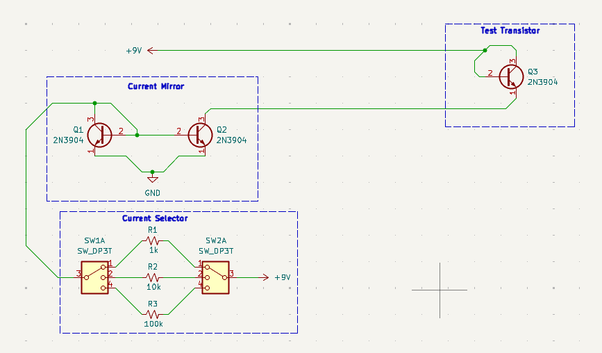
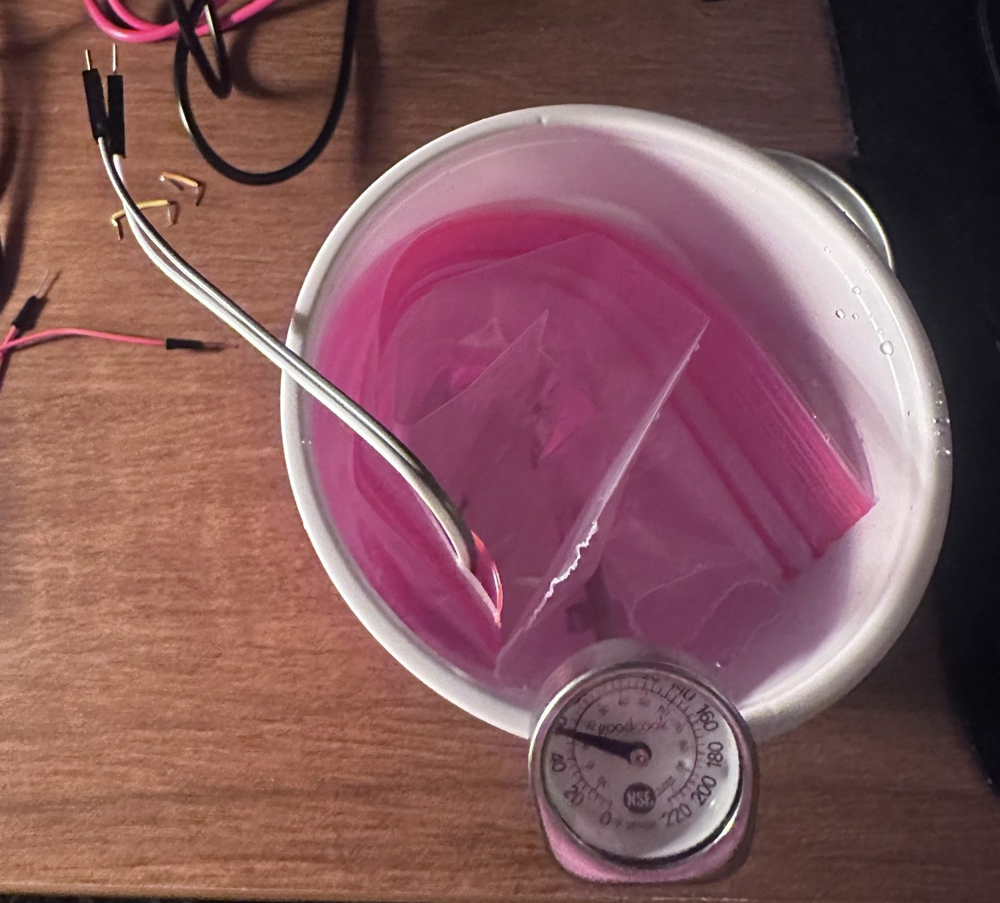
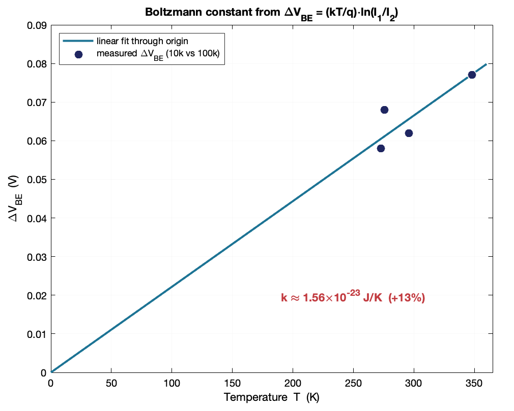
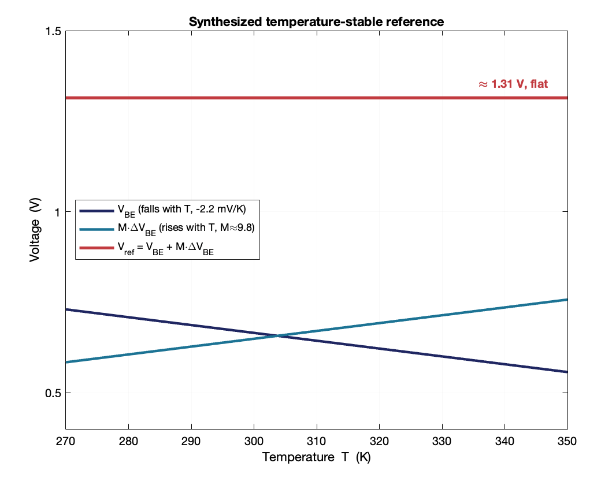

Physical Electronics · Measurement · Semiconductor Physics
Measuring the Silicon Bandgap from One Transistor
What I set out to do
Measure two physical constants, the silicon bandgap and Boltzmann's constant, from a single transistor, using a 9 V battery, three NPN transistors, a switch, a few resistors and a multimeter. Then combine the two results into a voltage that barely changes with temperature. That's a bandgap reference, and almost every integrated circuit has one inside it.
Why it works
A forward-biased junction follows VBE = (kT/q)·ln(I/IS). The saturation current IS rises steeply with temperature because it carries the bandgap inside it as exp(−Eg/kT), and that growth wins out, so VBE falls almost linearly as the transistor heats up, by roughly 2 mV per kelvin in silicon. If you extend that line down to 0 K, the thermal terms go to zero and the intercept equals Eg/q. So a temperature sweep gives you the bandgap.
For Boltzmann's constant, run the same transistor at two different currents and subtract. IS is different for every transistor, but it's the same in both readings, so it cancels and leaves ΔVBE = (kT/q)·ln(I₁/I₂). That difference grows linearly with absolute temperature, and since the current ratio is known, you can solve for k.


The measurement
The transistor under test is a diode-connected NPN, with the collector tied to the base. Its current is set by an all-NPN current mirror running as a sink, so the bias holds steady as it heats up. A switch selects either a 10 k or 100 k reference resistor, giving two currents about 10:1 apart for the ΔVBE half of the experiment.
The mirror stays out of the bath, at room temperature. If the current source heated up along with the transistor, the current would drift with temperature and I'd be measuring two things changing at once. I used eight baths from about −1 °C to 75 °C and gave each one three minutes to settle.
Data I threw out
I threw out every 1 k reading. At that current the 9 V battery sagged badly and the readings drifted while I watched. I also dropped three 10 k points as outliers because they showed a higher voltage at a higher temperature, which can't happen, since VBE only falls as the transistor warms up. That left five clean points for the bandgap fit and four paired points for Boltzmann.
I didn't want to drop data just because it didn't fit. Both cuts had a physical reason: one set had a known supply problem, and the other broke the rule that VBE can only fall with temperature.
Results


| Quantity | Measured | Accepted | Error |
|---|---|---|---|
| VBE slope | −2.16 mV/K (R² = 0.97) | ≈ −2 mV/K | — |
| Silicon bandgap | 1.31 eV | 1.12 eV at room temperature, ≈1.17 eV at 0 K | +17 % / +12 % |
| Boltzmann's constant | 1.56 × 10⁻²³ J/K | 1.38 × 10⁻²³ J/K | +13 % |
Building the reference
The last step adds the falling VBE to the rising ΔVBE, multiplied by about 9.8 so the two slopes cancel. The sum is flat at roughly 1.31 V across the whole temperature range. That's a bandgap reference, and it comes out at the same 1.31 V as the extrapolated intercept, which is a good check that the two measurements agree.

Where the error comes from
Both constants came out high, and I think there are two reasons. The real VBE curve bends slightly rather than being perfectly straight, so fitting a line and pushing it all the way to 0 K overshoots the true intercept. Also, my bath temperatures weren't perfectly settled. One cold point even read below a warmer one, and you can see the scatter in the plot.
That scatter hurts Boltzmann more than the bandgap, because ΔVBE is a difference of about 60 mV between two much larger readings, so a small error in either one gets magnified. Tighter temperature control and a wider sweep would pull both closer.
For a 9 V battery and a handheld multimeter, getting within 13–17% of the textbook values seems reasonable to me.